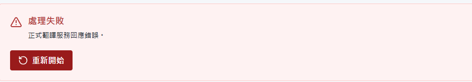
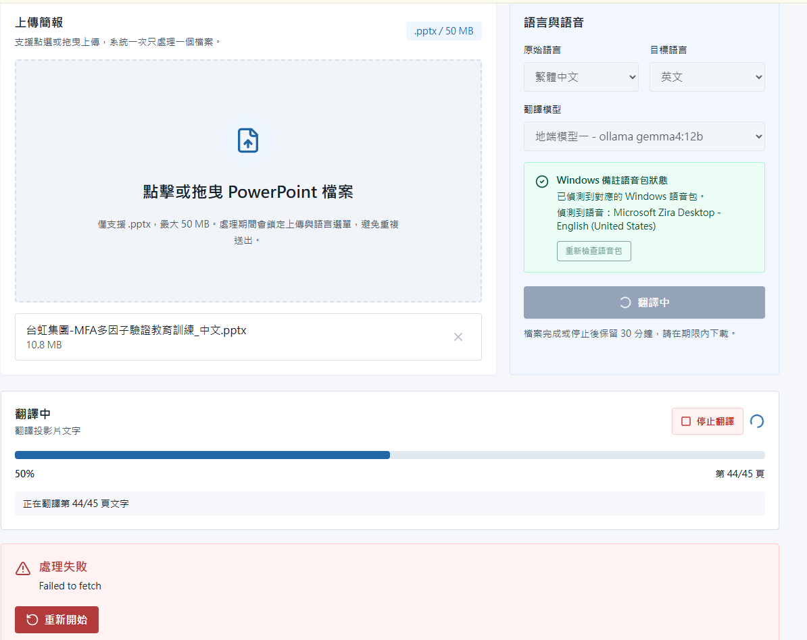

產品展示
PowerPoint 多語言教材轉換工具
這是一個公司內部使用的簡報處理網站。使用者上傳 .pptx 後，系統會翻譯投影片文字與講者備註，並把備註轉成語音嵌回簡報。
目標很簡單：減少人工製作多語言教材的時間，也降低漏頁、貼錯和版面跑掉的風險。
使用方向鍵或空白鍵換頁，點擊圖片可放大
當初為什麼想做
教育訓練不只是把投影片看完
實際痛點
公司內部教材常用中文或英文，但不同語言背景的員工不一定能完整理解。訓練內容如果只靠單一語言，容易造成學習落差。
被忽略的內容
很多講師補充說明會寫在 PowerPoint 講者備註裡。只翻譯投影片畫面，還是可能漏掉真正要講解的重點。
所以這個工具要處理的不是單純翻譯文字，而是把教材內容和講者說明一起轉成可理解的語言。
原本手動流程
如果人工製作，流程其實很繁瑣
逐頁複製文字
貼到翻譯工具
貼回簡報並調版面
翻譯備註並產生語音
逐頁插入音檔
花時間
每一頁都要複製、翻譯、貼回、調整格式。如果簡報頁數多，整個流程會變得很重複。
容易出錯
手動處理很容易漏翻備註、貼錯位置、插錯音檔，或讓原本的字型和條列格式跑掉。
產品目標
把多語言教材製作中最重複的步驟自動化
1
翻譯投影片文字
處理標題、一般文字方塊和指定 Placeholder。
2
翻譯講者備註
把每頁備註翻成目標語言，並寫回備註區。
3
產生並嵌入語音
使用 Windows 本機語音產生旁白，嵌入對應投影片。
最後輸出新的 .pptx，讓使用者可以直接下載並進一步檢查。
工具怎麼操作
使用者只需要上傳、選擇語言，然後等待完成
1
上傳 .pptx
限制單檔、格式和大小，避免一開始就送出不支援的檔案。
2
選語言與模型
支援繁體中文、英文和泰文，也保留雲端與地端模型切換。
3
下載成果
處理完成後由瀏覽器下載，檔案保留一段時間後自動清理。

首頁集中上傳、語言、模型和語音包狀態，讓使用者先確認必要條件。
處理中的狀態
進度條不能只是動畫，要真的反映後端工作
使用者看得到目前階段
例如正在翻譯投影片文字、翻譯備註、產生語音或嵌入音訊。
錯誤比較容易定位
系統會顯示目前頁數、總頁數和處理訊息，方便判斷問題發生在哪一步。
最難的地方
不是下載檔案，而是翻譯後不要破壞版面
需要翻譯的內容
- 一般文字方塊
- 標題、本文與內容 Placeholder
- 每張投影片的講者備註正文
第一版先不處理
- 圖片內文字、表格、SmartArt、圖表
- WordArt、群組物件、嵌入式物件
- 頁碼、日期、頁尾、音訊與影片
如果直接覆蓋整個文字方塊，字型、條列、對齊和段落格式都可能跑掉，所以第一版改成以段落為單位處理。
講者備註與語音
這個工具的特色是把備註也變成旁白
投影片文字
翻譯後寫回原本位置，盡量保留原本版面、字型、段落順序和條列層級。
講者備註
備註會被翻譯並寫回，同時用目標語言產生語音，嵌入對應投影片。
為什麼不自動補講稿？
如果投影片原本沒有備註，系統不會自己編內容。這樣可以避免 AI 自行延伸或產生和原教材不一致的說明。
實測遇到的問題
錯誤訊息要讓使用者知道下一步怎麼做

翻譯服務可能失敗，不能只假設 API 一定正常。

畫面同時出現翻譯中和錯誤，會讓使用者不確定系統狀態。
這類問題讓我後來更重視進度、錯誤和停止狀態要以後端工作狀態為準。
代表性修正
測試後補上的不是裝飾，而是使用者需要的回饋
錯誤處理
翻譯服務、語音包、模型連線失敗時，要用看得懂的訊息提醒使用者。
狀態同步
前端畫面不自己猜狀態，而是定期讀取後端工作進度。
停止與重試
處理中可以停止，失敗後也要能回到可重新上傳的狀態。
這些修正讓工具比較不像一次性的 Demo，而是更接近實際會有人使用的網站。
修正後成果
完成後提供結果統計與下載

完成畫面會顯示輸出檔名、投影片數、文字頁數、語音頁數、警告數和下載按鈕。
下載由瀏覽器處理
網站不直接寫入使用者桌面或指定磁碟，避免瀏覽器安全限制與路徑問題。
檔案暫存後清理
完成或失敗後保留一段時間，讓使用者能下載，也避免公司內部檔案長期留在伺服器。
價值、限制與 AI 使用心得
最後完成的是一個可用，但仍保留邊界的工具
目前價值
減少人工翻譯、貼回、調版面和插入音訊的時間，也降低漏頁與貼錯的機率。
第一版限制
不處理圖片文字、表格、SmartArt、圖表和複雜物件，輸出後仍需要人工最後確認。
AI 的角色
AI 幫我整理需求、拆解功能和排查錯誤，但功能取捨和結果驗收還是要自己判斷。
這次最重要的不是做出一個「什麼都能翻」的工具，而是把一個實際工作流程先做得清楚、可測試、可改進。